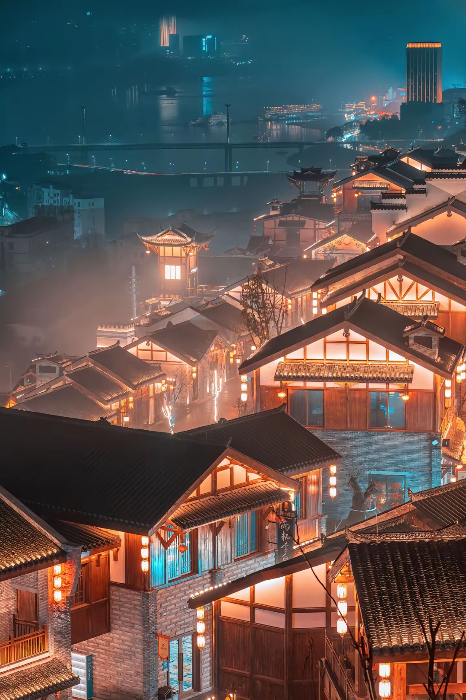

全国重点文物保护单位 · 川渝宋元山城防御体系重要组成 · 万州首个考古遗址公园
天生城位于万州城区西北周家坝街道流水社区，是一座孤峰突起的险峻山峰，海拔550多米，因山势雄奇、四面悬岩绝壁、自然成城而得名“天生城”，又因山势险峻如城郭而获“小石城”之别称。民间传说中，它与蜀汉昭烈帝刘备伐吴驻兵的典故相连，故亦被称为“天子城”。
2025年10月1日，万州区首个考古遗址公园——天生城遗址公园正式对外开放。这座承载宋元山城防御体系历史记忆的“露天博物馆”，历经三年多精心建设，总占地面积近30万平方米，凭借“千年古遗址+现代文旅”的创新模式，迅速成为渝东北文旅新地标[reference:0]。
天生城遗址见证了万州从新石器时代晚期到现代三千年的历史。2013年被国务院公布为第七批全国重点文物保护单位，2024年与川渝两地20座南宋山城联合纳入申报世界文化遗产预备名录[reference:1]。持续考古揭露出南宋东门遗址、北外城城墙等重要遗迹，出土铁火炮、倒流壶等珍贵文物[reference:2]。
遗址公园总面积
历史遗迹
海拔高程
列入全国重点文保
相传蜀汉昭烈帝刘备伐吴时，曾屯兵于天生城，故又名“天子城”。天生城地势险要，易守难攻，自古即为兵家必争之地。
四川安抚制置使余玠为抵御蒙古军队入侵，“因山为城”修筑天生城，并将万州州治迁于山上。此后历经四次增修，天生城成为川渝宋元山城防御体系的关键一环。
元朝大将杨文安率精兵围攻天生城，守将上官夔率军民在内无粮草、外无援兵的绝境中殊死巷战，坚守五十三天后壮烈殉国，谱写了一曲气壮山河的英雄悲歌[reference:3]。
明末清初为抵御张献忠及清军入川，曾对天生城进行补筑，清晚期再次补筑，使城防更加完善[reference:4]。
天生城遗址被国务院公布为第七批全国重点文物保护单位[reference:5]。
天生城遗址与川渝两地20座南宋山城联合，成功纳入申报世界文化遗产预备名录[reference:6]。
万州区首个考古遗址公园正式对外开放，累计接待游客6.5万余人次[reference:7]。
天生城是十三世纪中国南方农耕文明与北方游牧民族从对抗走向融合的生动缩影，历史意义深远[reference:8]。
考古揭露出南宋东门遗址、北外城城墙，出土铁火炮、倒流壶等珍贵文物[reference:9]。
为三峡国家考古遗址公园提供了重要范本，天生城成为首批重点建设对象[reference:10]。
2024年，重庆市文物考古研究院联合重庆三峡移民纪念馆对天生城遗址开展了考古发掘工作，收获颇丰。
该城门是天生城的主城门之一，也是连通内城与东外城最便捷的通道，堪称天生城遗址历年来最重要的考古发现之一。元军最后攻取天生城时就是先攻占东外城，后再夜袭内城一举攻破[reference:11]。
在此前的考古工作中，曾经发现过汉至六朝时期的遗物但未发现文化层。此次首次发现了这一时期的文化层，填补了相关考古工作研究的空白，还出土了泥质陶片和青釉瓷片[reference:12]。
此外，考古人员还发现了与城门相关的墩台、台阶、道路、排水沟等遗迹，这些遗迹共同组成了一个区域性的交通、军事体系，整体格局较为清晰，对于认识整个天生城的结构布局具有重要作用[reference:13]。
天生城遗址现有前、中、后三道城门及两道卡门，中城门附近石壁遗有南宋间摩崖筑城题记和碑文5处、元代纪功碑1幅[reference:14]。城内现存南宋“淳祐”“宝祐”“咸淳”等时期筑城题记及碑刻，元至元十三年记功碑1处，另有古炮台2座，大水池2处，水井、水塘各1处，并有部分古建筑遗迹[reference:15]。
前寨门俯瞰长江，山势险峻，绝壁凌空。清代咸丰三年（1853年）在前门卡门正上方额刻有“天生城”三字，字径约26厘米，行楷阴刻。城内的一字城墙残迹、采石场遗址等，无不诉说着古人的筑城智慧。
“石城终古号天生，不为兴亡改故情。”
——天生城南宋石刻题诗
天生城遗址公园设计打破传统景区的封闭模式，精心构建了“一轴两线多点”游览体系，让历史遗迹“串珠成链”，让游客“移步换景”[reference:16]。
沿山脊主步道从东南入口至北入口，沿途设有清晰标识、场景复原和智能讲解设施，讲述天生城核心故事[reference:17]。
串联前寨门、古炮台、采石场、古井等军事遗迹，展现古代“依山设防、因山为城”的防御智慧[reference:18]。
串联南门、南一字城墙、东门、摩崖石刻等文化景观，深度解读山城的文化底蕴[reference:19]。
沿途50余处历史遗迹，在贺家院子、点将台等关键点位，创新引入NPC角色扮演——南宋守将上官夔、守城士兵及山民代表，通过互动巡游表演，让历史“活”起来[reference:20]。环线中还巧妙融入茶摊、非遗展示、文创售卖、投壶射箭等互动体验区。
天生城最壮烈的历史篇章，书写于南宋晚期。公元1276年，元朝大军压境，万州守将上官夔率领军民，在内无粮草、外无援兵的绝境中，与蒙军展开殊死巷战，坚守五十三天后壮烈殉国[reference:21]。
上官夔拒绝投降，巷战而死，用生命为天生城注入了忠勇不屈的精神灵魂。后人为纪念上官夔以身殉国之壮举，曾在城上建有上官夔祠。这段历史，使天生城不仅是一座军事要塞，更成为中华民族忠义精神的象征。如今在天生城遗址公园中，游客可通过NPC角色扮演，与“上官夔将军”互动对话，感受那段荡气回肠的历史。
※ 对现役军人、退役军人、“三属”、现役军人家属、6岁及以下儿童、65岁以上老年人、残疾人免收门票；对6岁以上未成年人、60-65岁老人、全日制大学本科及以下学生实行半票优惠[reference:22]。以上为2025年试行价格，具体以景区实际公告为准。
“石城终古号天生，不为兴亡改故情。”
——天生城南宋石刻题诗
一座天生城，千年万州史。攀登这座“可触摸的历史”之城，聆听千年战鼓的回响，感受忠义精神的传承，在绝壁雄峰之间，开启一场深度的文明对话之旅[reference:23]。